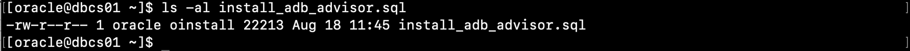
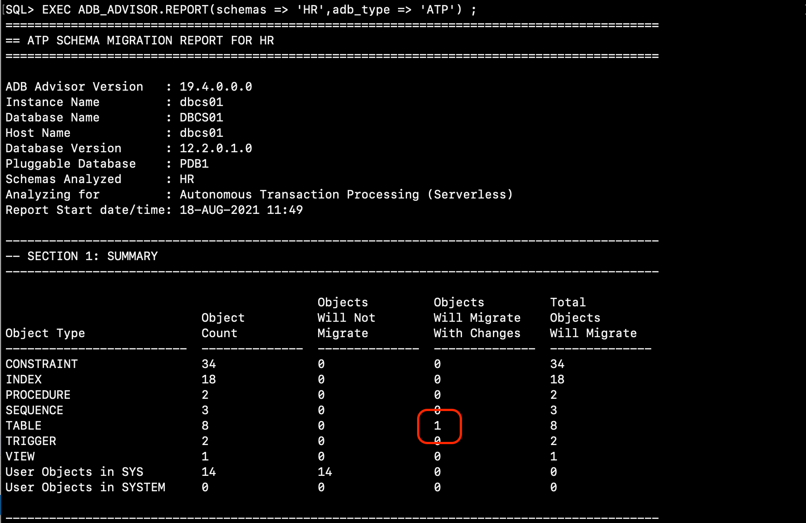
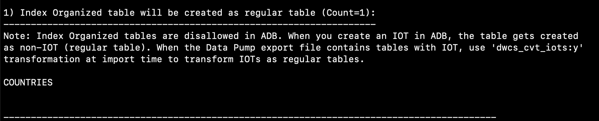

はじめに
Autonomous Databaseでは性能・可用性・セキュリティの観点から特定のデータベースオブジェクトの作成が制限されています。
具体的な制限事項はマニュアルに記載がございますが、これら制限対象のオブジェクトを利用しているか確認するために、オラクルはSchema Advisorというスクリプト・ツールを提供しています。

この章では先の301: 移行元となるデータベースを作成しようにて事前に作成しておいたDBCSインスタンスを利用して、Schema Advisorの使い方をご紹介します。
目次 :
前提条件 :
- My Oracle Supportへのログイン・アカウントを保有していること
- 301: 移行元となるデータベースを作成しようを完了していること
所要時間 : 約30分
1. Schema Advisor とは？
Autonomous Databaseにオブジェクトを移行する際に、制限事項に抵触しているオブジェクトの有無を調べるパッケージです。 スキーマを指定することで、対象スキーマに格納されているオブジェクトの移行可否、不可となるオブジェクトについてはその理由と対処方法を出力してくれるツールです。
尚、現時点でサポート対象となるOracle Databaseのバージョンは以下となっています。
- 10.2 and higher including 11g, 12c, 18c and 19c（2021/8時点）
2. 事前準備
2-1. パッケージのダウンロード
まずはパッケージを入手し、調査対象となるデータベース環境で実行できる場所に配置します。
-
以下、My Oracle Supportにアクセスしダウンロードしてください。
Oracle Autonomous Database Schema Advisor (Doc ID 2462677.1) -
ダウンロード後、展開したinstall_adb_advisor.sqlをWinSCP等を利用してDBCS上のOracleユーザーの任意の場所に配置してください（以降ではHOMEディレクトリ以下に配置したとして記載しています）
ls -al install_adb_advisor.sql
2-2. パッケージのインストール
インストールするユーザーをPDB上に新規作成しパッケージをインストールします。
- 移行元のOracle Database にログインします。
sqlplus / as sysdba - pdb1に切り替えます
alter session set container = pdb1; - スクリプトを実行します。ここでは新規に作成するユーザーとして以下を指定しています。
- ユーザー名：ADB_ADVISOR
- パスワード：WelCome123#123#
@install_adb_advisor.sql ADB_ADVISOR WelCome123#123#（実行例、後半は省略）

- 特にエラーがないことを確認し、SQL*Plusを終了します。
exit
（補足）
実行途中で「ORA-00942: table or view does not exist」といったエラーが表示され他場合、こちらは新規にユーザーを作成している中で存在しない表に対する操作を実行しようとしたことによるエラーですので、ここでは無視して構いません。
以上でインストール作業は完了です。
3. 実行と結果確認
それではHRスキーマに格納されている各種オブジェクトをADBに移行できるかチェックしてみましょう。
- ADB_ADVISORでpdb1インスタンスにログインします。
sqlplus ADB_ADVISOR/WelCome123#123#@pdb1 - SQL*Plusの環境変数をセットします。
set serveroutput on format wrapped set lines 200 - HRスキーマがATPに適合できるか実行します。
EXEC ADB_ADVISOR.REPORT(schemas => 'HR',adb_type => 'ATP') ;（実行例、後半は省略）
SECTION1: SUMMARY に対象スキーマのオブジェクト数と移行可否オブジェクトの数が出力されます。 また、サポートしていないものの対応策があるものについては簡単なガイドをしてくれます。
 例えばここでは変更が必要なオブジェクトとして、「索引構成表は利用できないので、COUNTRIES表はData Pumpでロードする際に変換するように」といったことを確認いただけます。  - 次に、HRスキーマがADWに適合できるか実行します。
EXEC ADB_ADVISOR.REPORT(schemas => 'HR',adb_type => 'ADW') ;こちらでは先の301: 移行元となるデータベースを作成しようで作成したLONG型を有するNG_TAB_4ADW表はADBに移行できないことを、対応策と共に明示してくれます。

補足
その他、このレポートではADBへの移行に際して変更が必要な表領域や初期化パラメータの設定なども併せて表示してくれます。
レポートされる内容に関する詳細、および結果サンプルについてはOracle Autonomous Database Schema Advisor (Doc ID 2462677.1)に同梱されている手順書を参照ください。 - 次に、HRスキーマが ATP(Dedicated) に適合できるか実行します。
EXEC ADB_ADVISOR.REPORT(schemas => 'HR',adb_type => 'ATPD') ;（補足）
このパッケージはShared(共有)型だけでなく、Dedicated型のAutonomous Databaseにも対応しています。
4. パッケージのアンインストール
使い終わったら消しておきましょう。
- 移行元のOracle Database にログインします。
sqlplus / as sysdba - pdb1に切り替えます
alter session set container = pdb1; - ADB_ADVISORスキーマを削除します。
SQL> drop user ADB_ADVISOR cascade;
おわりに
ここではAutonomous Databaseに移行する際に利用できる事前チェックスクリプトを紹介しました。
移行プロジェクトを開始される際の事前チェックとしてご利用いただけますので、ぜひご検討いただければと思います。
参考資料
- Autonomous Database Cloud 技術詳細
- マニュアル(ADB-Sの各種制限事項について)
- Oracle Autonomous Database Schema Advisor (Doc ID 2462677.1)
以上でこの章は終了です。次の章にお進みください。